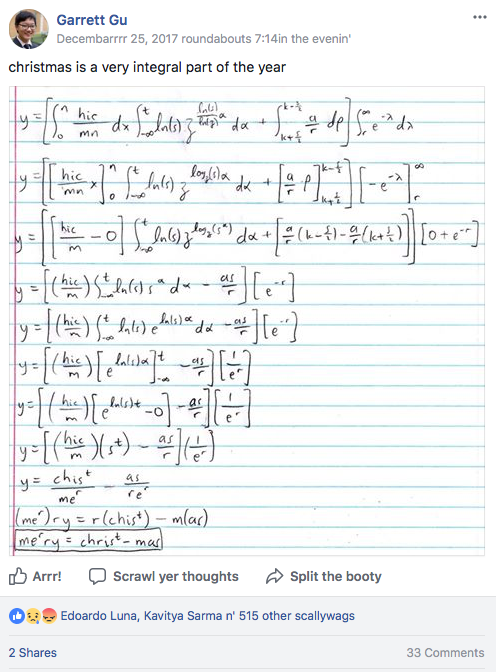
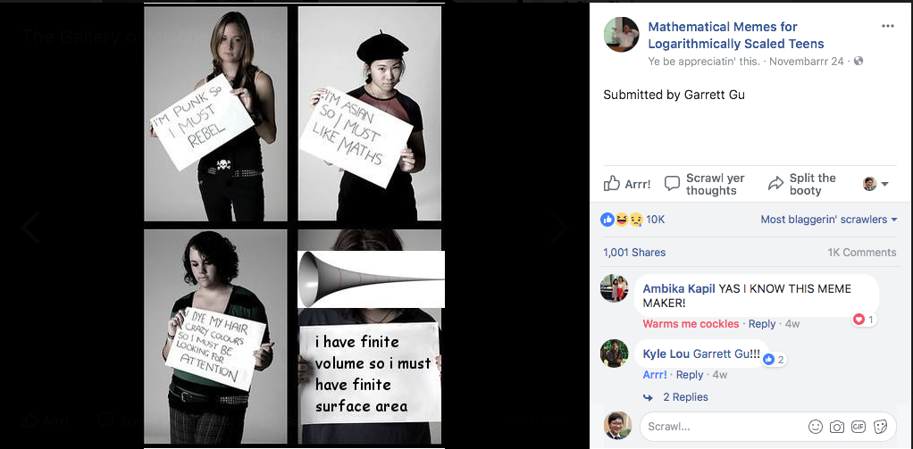
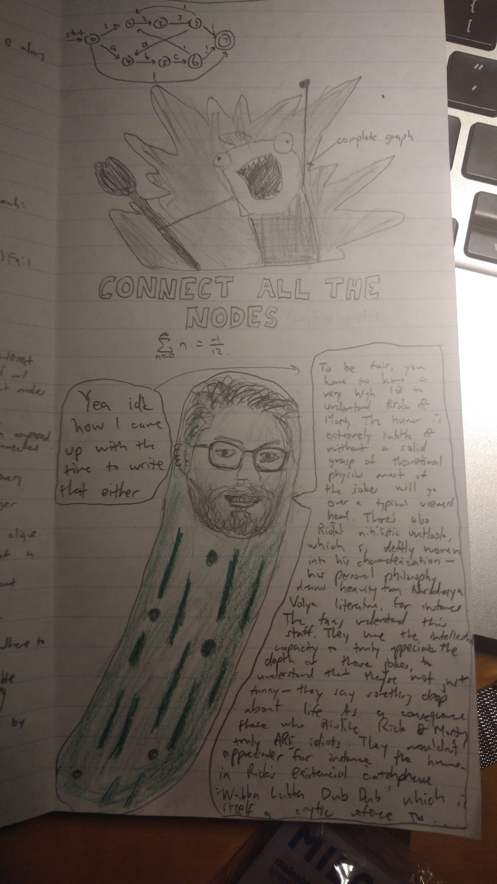

Hi! 😜
Thanks for checking out Garrett's meme gallery. 🎉
A friend posted this one for me because I'm not in the MIT Facebook group:
Preconditions: all the variables are real and independent, and s>1.

Here's a very fine (ite) meme:

I leave a little doodle on every full sheet I'm allowed to bring to an exam; here's one of them: (the face of the pickle is my CS professor)

Atom text editor is an instrument:
Martin Skreli gets arrested by the FBI: